name: gallery class: center,middle, .toc[[✧](../index.html)] .title[A Gallery of Visualizations] --- class: left, .toc[[✧](../index.html)] #Overview In this lecture we'll look at some examples of data visualizations and simple analyses from several papers. We will give names to different plot types as way to understand generic approaches that can be applied in different situations. Try to appreciate them from a great distance, understanding how they are presenting information rather than the details. Imagine how you might use each of these to examine your data, and makes notes of which plot types would be most likely to be useful. --- class: middle, center, .toc[[✧](../index.html)] Some examples from Hattermann, T., L. H. Smedsrud, O. A. Nøst, J. M. Lilly, and B. K. Galton-Fenzi (2014). Eddy-resolving simulations of the Fimbul Ice Shelf cavity circulation: Basal melting and exchange with open ocean. [{link}](https://doi.org/10.1016/j.ocemod.2014.07.004) --- class: center, .toc[[✧](../index.html)] ## The Schematic <center>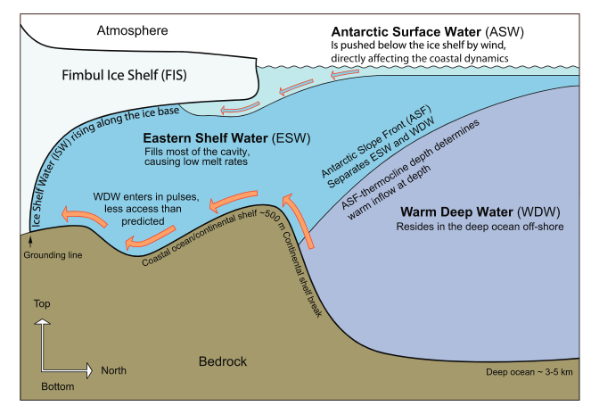</center> A visual representation of your hypothesis of how the system works. --- class: center, .toc[[✧](../index.html)] ## The Orientation Plot + The Snapshot <center>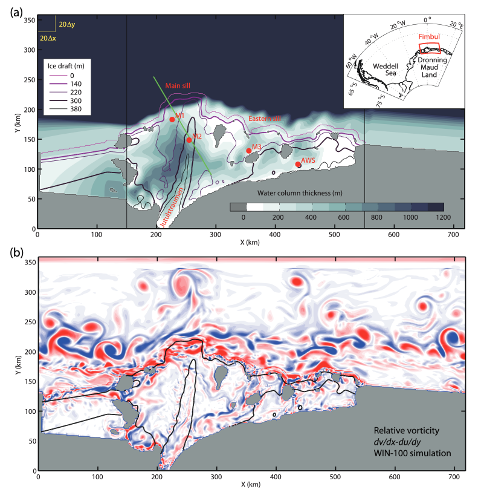</center> This combination of two plots is more meaningful than either alone. --- class: middle, center, .toc[[✧](../index.html)] An example from Hattermann, T., O. A. Nøst, J. M. Lilly, and L. H. Smedsrud (2012). Two years of oceanic observations below the Fimbul Ice Shelf, Antarctica. [{link}](https://doi.org/10.1029/2012GL051012) --- class: center, .toc[[✧](../index.html)] ## The Offset Line Plot <center>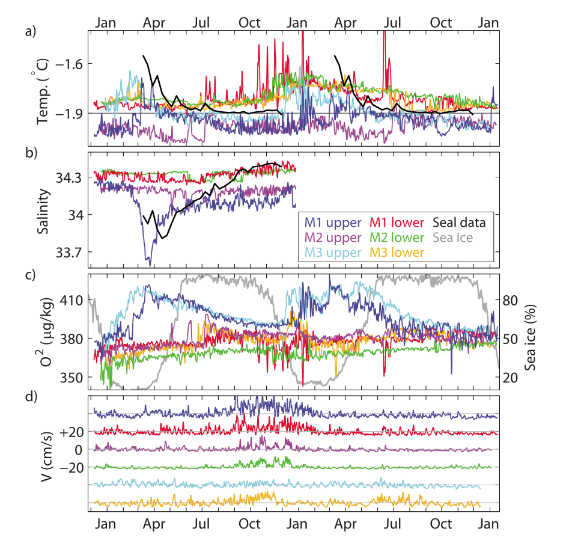</center> Note (i) stacked axes and (ii) the very informative use of color. --- class: middle, center, .toc[[✧](../index.html)] An example from Trodahl, M., P. E. Isachsen, J. Nilsson, J. M. Lilly, and N. M. Kristensen (2020). The regeneration of the Lofoten Vortex through vertical alignment. [{link}](https://doi.org/10.1175/JPO-D-20-0029.1) --- class: center, .toc[[✧](../index.html)] ## The Series of Snapshots <center>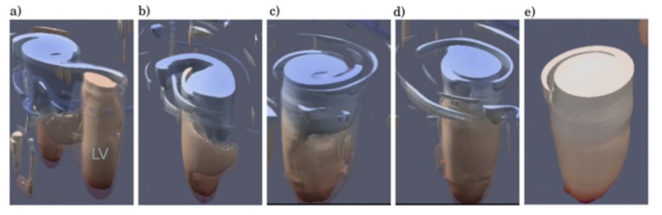</center> The eye fills in the gaps, giving the impression of a movie. There are five (!) dimensions visualized in this plot: x, y, z, time, and density (color). --- class: middle, center, .toc[[✧](../index.html)] Some examples from Lilly, J. M. and P. Pérez-Brunius (2021b). Extracting statistically significant eddy signals from large Lagrangian datasets using wavelet ridge analysis, with application to the Gulf of Mexico. [{link}](https://doi.org/10.5194/npg-28-181-2021) --- class: center, .toc[[✧](../index.html)] ## The Spaghetti Plot <center>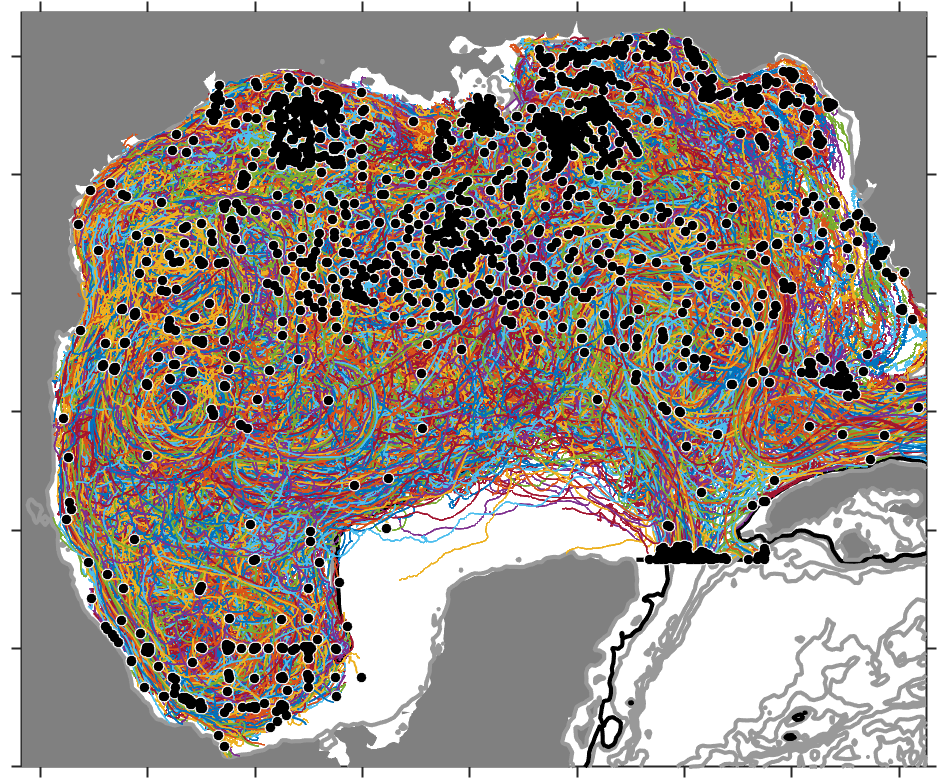</center> A plot of the trajectories along which measurements are taken. Note use of symbols to denote trajectory start point. --- class: center, .toc[[✧](../index.html)] ## 2D Histogram and Classification Map <center>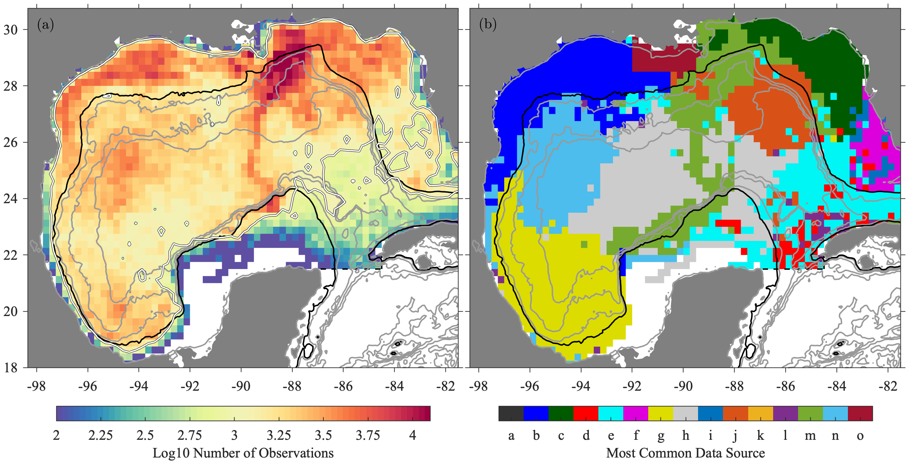</center> Log10 number of observations in bins from 15 different experiments (left). Most common experimental source in each bin (right). --- class: center, .toc[[✧](../index.html)] ## Creative Line Plot <center>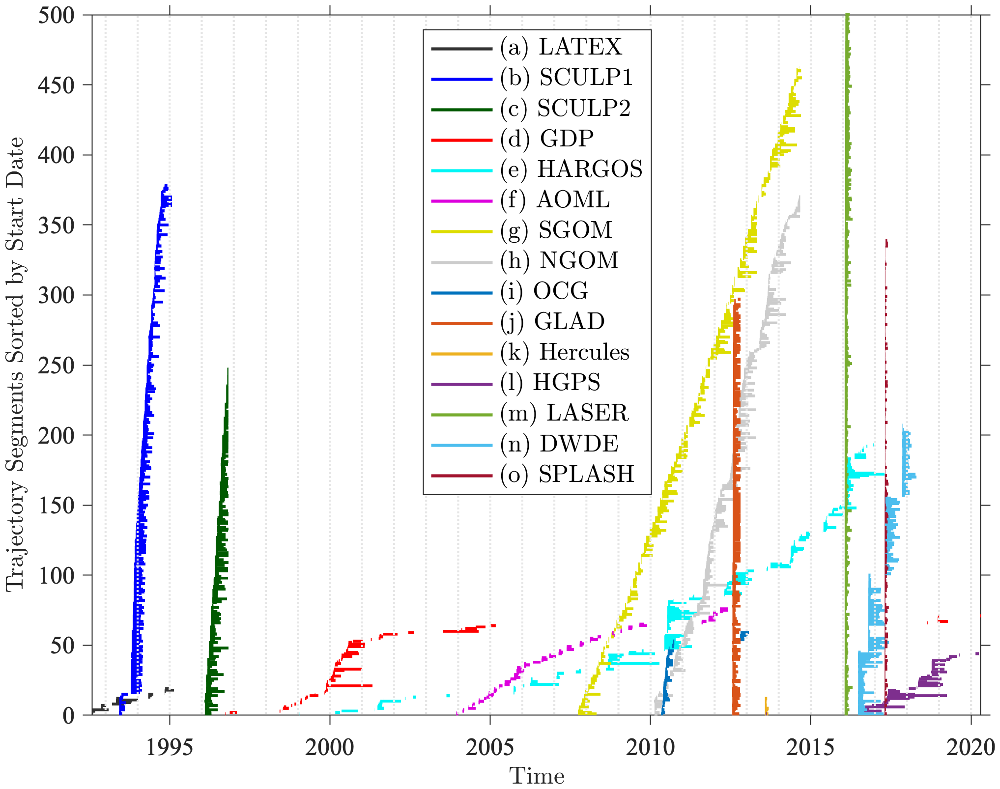</center> Information in (a) line color (b) line length (c) line x-start point and (d) line y-start point. --- class: center, .toc[[✧](../index.html)] ## Dovetailing 2D Histograms .left-column[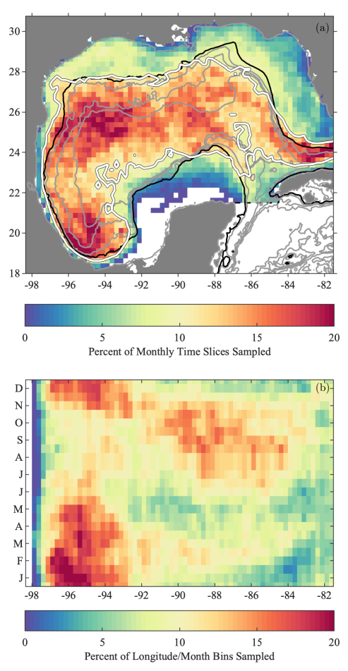] .right-column[Top: Histogram of month-long time periods sampled in each latitude/longitude bin. Bottom: The same information, but now in longitude/month bins. Note the x-axes are the same, i.e. we are looking at 3D distribution in two 2D slices.] --- class: center, .toc[[✧](../index.html)] ## Downscaling Dataset Resolution <center>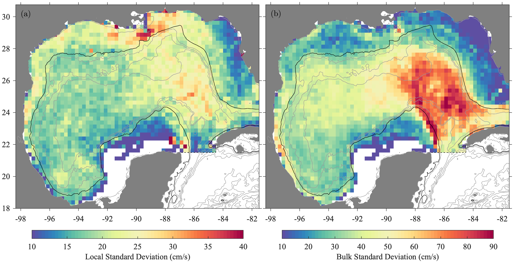</center> Right: Variability of the average in each bin about the time average. Left: Variability within each bin to the time-dependent bin average. The variability on the left is the variability that we lose when we grid the data. We can keep track of this lost variability explicitly. --- class: center, .toc[[✧](../index.html)] ## Shaded Vector Plot and Streamline Plot <center>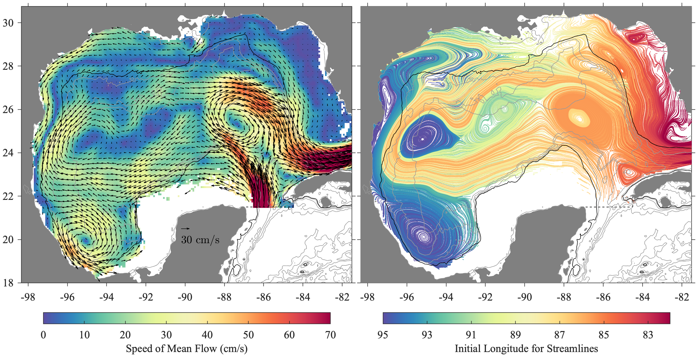</center> Left: mean flow field displayed as arrows, superposed on color shading showing, in this case, the mean flow magnitude. Right: the same mean flow field visualized as artificial particle trajectories, a.k.a. a streamline plot. Color shows initial longitude. --- class: middle, center, .toc[[✧](../index.html)] Some examples from Lilly, J. M. and P. B. Rhines (2002). Coherent eddies in the Labrador Sea observed from a mooring. [{link}](https://journals.ametsoc.org/view/journals/phoc/32/2/1520-0485_2002_032_0585_ceitls_2.0.co_2.xml) --- class: center, .toc[[✧](../index.html)] ## Simple Line Plot <center>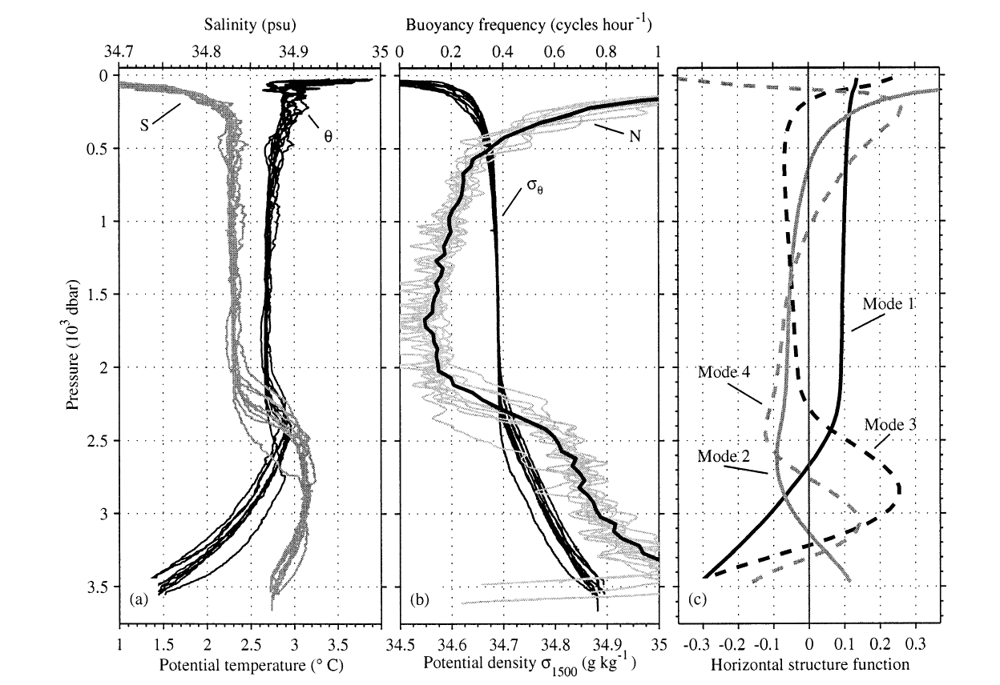</center> Simple line plots can be very useful, especially when labelled. Note the “Mean+Variability” plot in the middle. --- class: center, .toc[[✧](../index.html)] ## The Event Plot .left-column[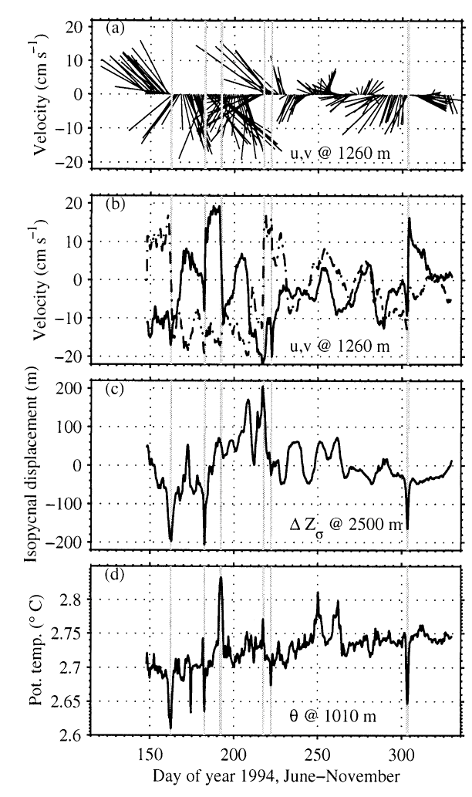] .right-column[Multiple fields are shown with apparent events indicated, in this case, by a line. The top panel is “Stickvector Plot” of velocity. ] --- class: center, .toc[[✧](../index.html)] ## Hodographs and Progressive Vectors <center>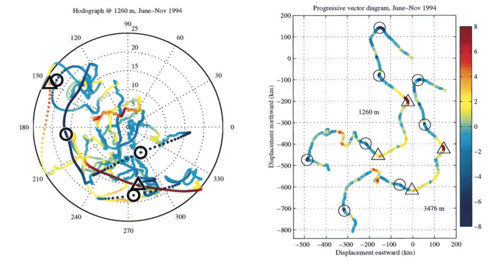</center> Left: A hodograph, the curve traced out by the velocity vector. Right: The progressive vector diagram, the integral of the velocity. These are examples of “3D Scatter Plots” with color showing a third quantity. --- class: center, .toc[[✧](../index.html)] ## Kinematic Model <center>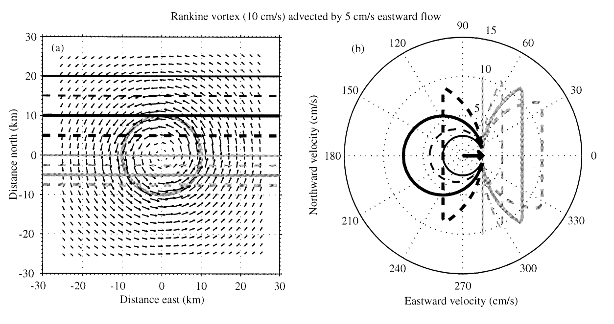</center> An often powerful approach is to come up with a simple conceptual model (that is, a hypothesis) for what you think is happening. In this case, we look at what happens when a Gaussian eddy is advected past a mooring. --- class: center, .toc[[✧](../index.html)] ## Synthetic Observations <center>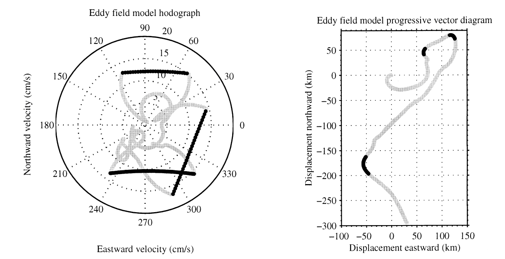</center> Then we may try to recreate quasi-realistic observations. This can be a powerful way to scrutinize proposed hypotheses. Here, we have a hodograph and progressive vector diagram generated by several eddies advecting each other. Look familiar? --- class: middle, center, .toc[[✧](../index.html)] Some examples from Lilly, J. M., P. B. Rhines, F. Schott, K. Lavender, J. Lazier, U. Send, and E. D'Asaro (2003). Observations of the Labrador Sea eddy field. [{link}](https://doi.org/10.1016/j.pocean.2003.08.013) --- class: center, .toc[[✧](../index.html)] ## The Kitchen Sink Plot .left-column[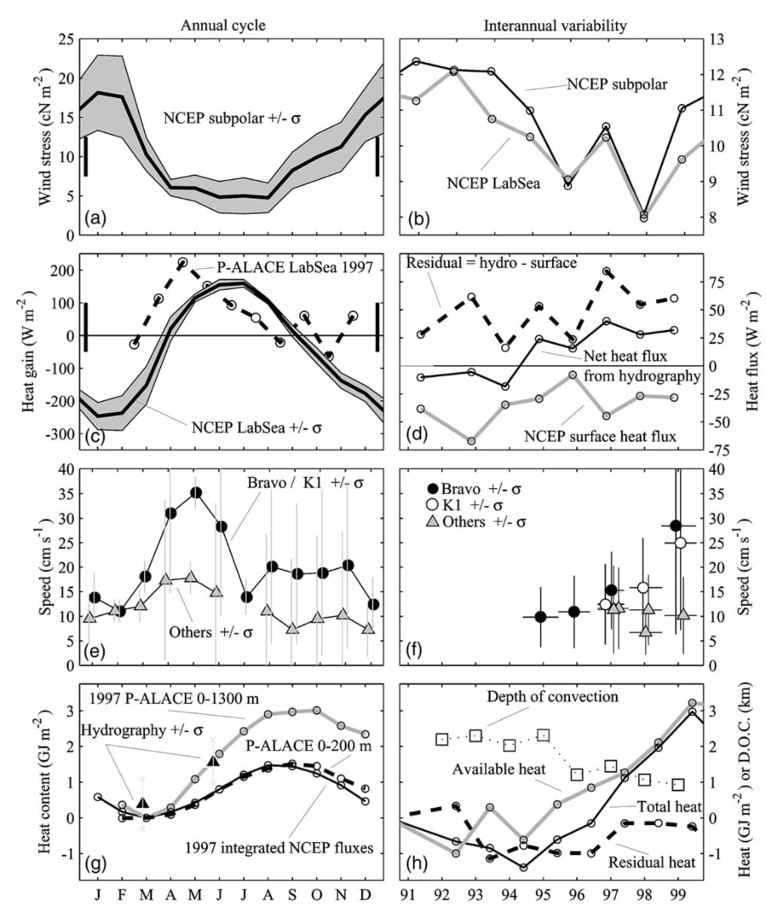] .right-column[If you have a lot of datasets or fields that are interrelated, one approach is to try to show them all from some common perspective. Here, we're looking at the annual cycle (left) and interannual variability (right) in various fields. Small detail, note the flipped y-axis locations, the bottom two of which are shared between left and right.] --- class: center, .toc[[✧](../index.html)] ## The Offset Line Plot <center>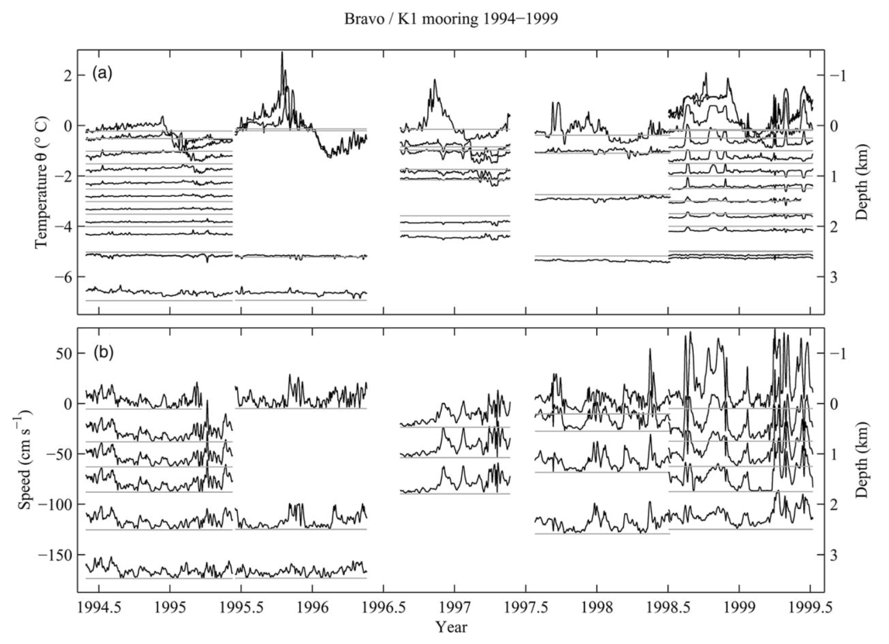</center> Lines show the measured variables, as well as the depth and time over which the measurements were taken. <!--class: center, .toc[[✧](../index.html)] ## Selected Contours .left-column[<img style="width:100%" src="../figures/olsef-contourandline.png">] .right-column[Here shading is used together with selected contours, to help show small-scale structure without the plot becoming too busy. Both black lines and white lines are used for better visibility.]--> --- class: center, .toc[[✧](../index.html)] ## The Representative Event Plot <center>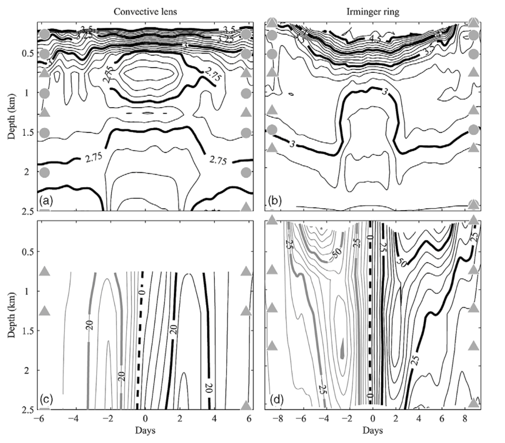</center> When analyzing multiple events, showing examples is useful. --- class: center, .toc[[✧](../index.html)] ## Colocated Event Observations <center>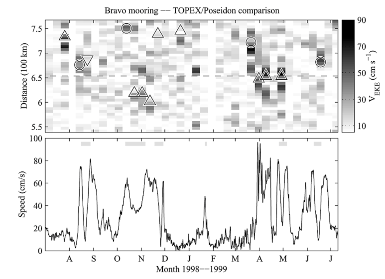</center> When different platforms observe similar events, you can try to find instances where both observe the same event at the same time. --- class: center, .toc[[✧](../index.html)] ## The Waterfall Plot <center><img style="width:90%" src="../figures/olsef-waterfall.png"></center> A waterfall plot, or dense offset line plot, is useful when we're trying to draw attention to common features, for example. --- class: center, .toc[[✧](../index.html)] ## The Composite Event Plot .left-column[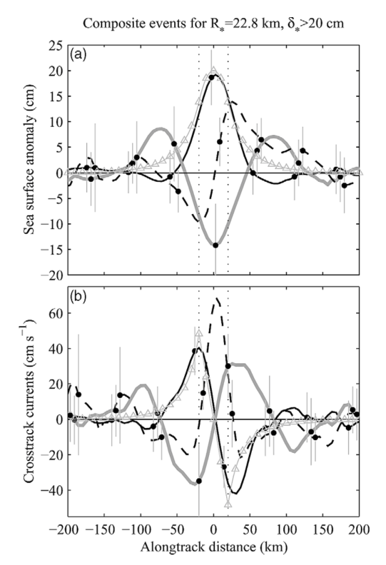] .right-column[Then you can talk about a typical event by averaging to form a composite. Here vertical bars are used to represent the spread of the ensemble about the composite. ] --- class: center, .toc[[✧](../index.html)] ## 3D Scatter Plot <center>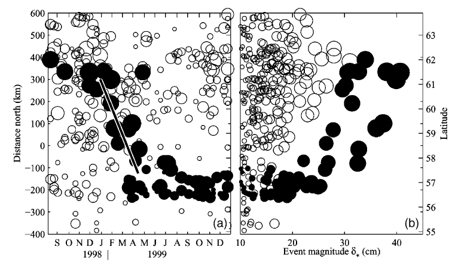</center> Quantitative 3D scatter plots can be very informative. Size represents event magnitude, with the key shown on the right. Note the use of (i) dovetailing axes and (ii) redundant information. --- class: middle, center, .toc[[✧](../index.html)] An example from Lilly, J. M. and S. C. Olhede (2012). Generalized Morse wavelets as a superfamily of analytic wavelets. [{link}](http://doi.org/10.1109/TSP.2012.2210890) --- class: center, .toc[[✧](../index.html)] ## The Zoo Plot <center>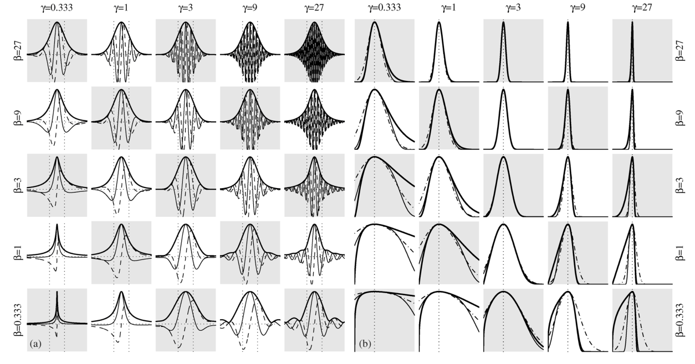</center> In the Zoo Plot, we try to show a range of possibilities through numerous examples, as a function of some parameter space. Here, left is time domain and right is Fourier domain.